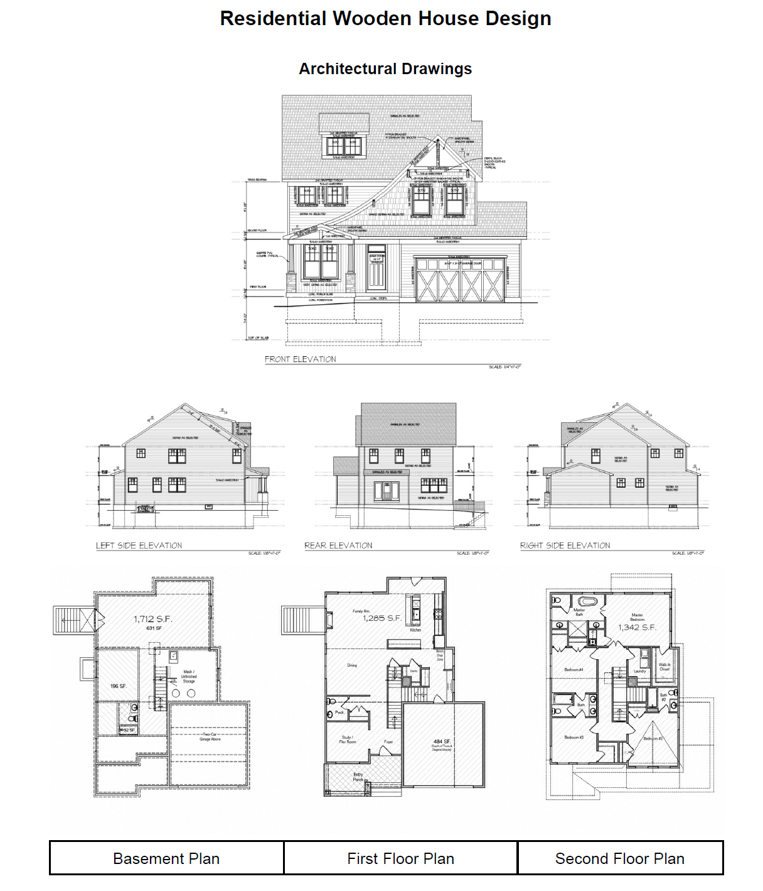
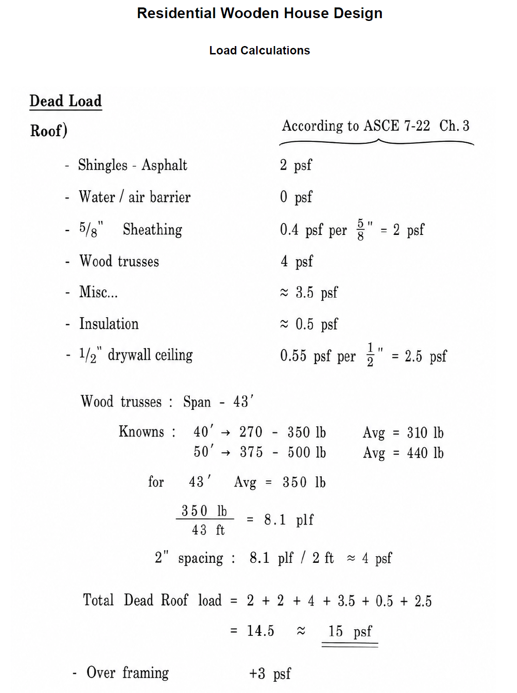
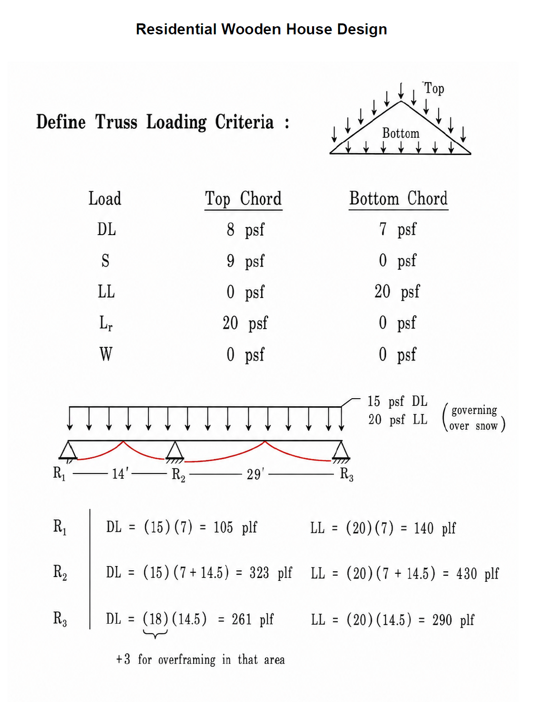
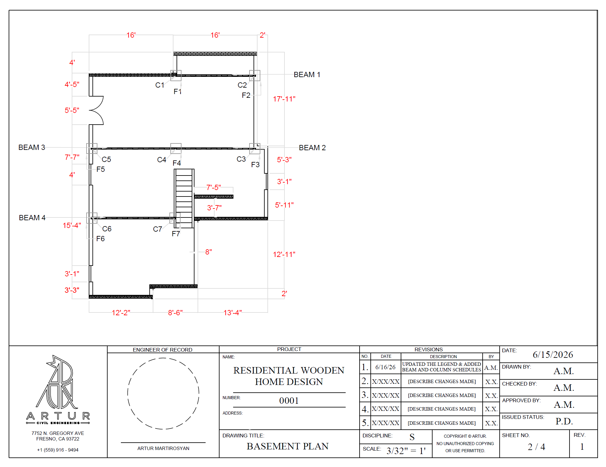
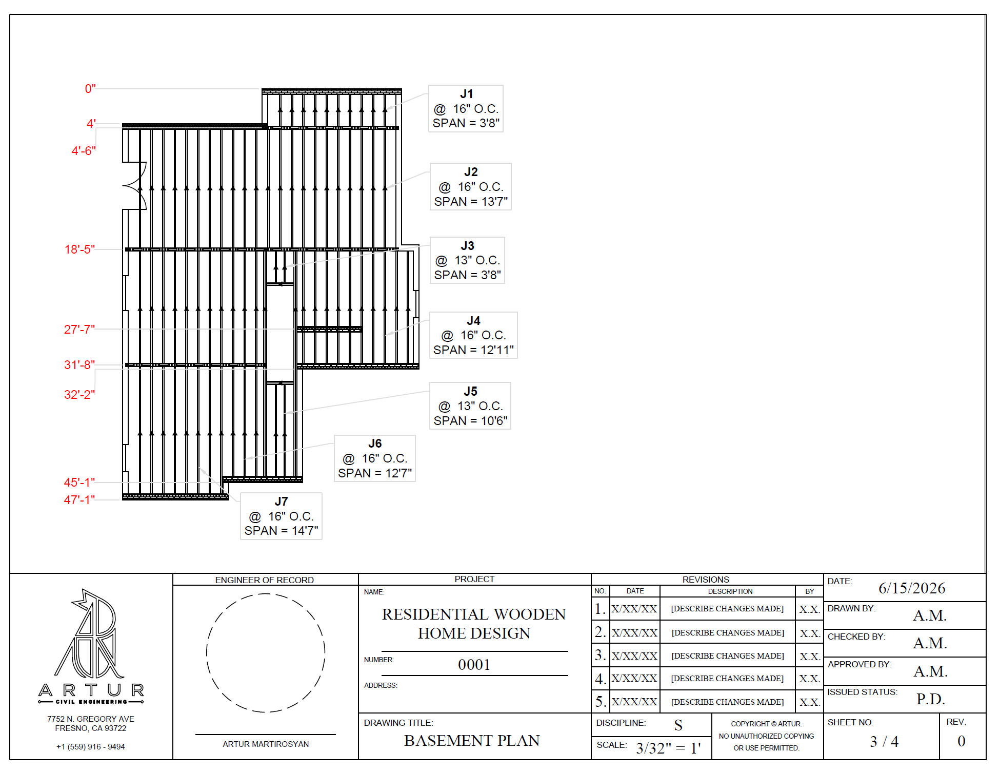

The Project
This project is my current attempt to work through the structural design of a residential wood-frame home starting from the architectural plans. I began by studying the building layout and site conditions, then moved into gravity-load calculations and preliminary framing plans.
The design is still developing, but the work completed so far shows how I am approaching load paths, joist direction, beam support, column locations, and the transition from calculations into structural drawings.
Why I Am Showing an Ongoing Project
This is not presented as a finished construction package. I included it because it shows the decisions, revisions, and open questions that are part of learning structural design.
Current Progress
Site and Design Criteria
Reviewed the project location and gathered wind, snow, rain, and seismic information needed to establish the design conditions.
Gravity-Load Calculations
Developed preliminary roof, floor, partition, live-load, snow-load, and truss-loading calculations.
Preliminary Framing Plans
Began laying out beams, columns, joist directions, spans, and support locations using the architectural plans as the starting point.
Architectural Starting Point
The architectural plans define the shape and use of the house, but they do not automatically show how the loads should be supported. I used the plans to identify likely bearing lines, large openings, stairs, room transitions, and locations where beams or columns may be required.

Architectural Plans
The elevations and three floor levels provided the starting point for the structural framing layout.
Building Concept
The rendering helped connect the floor plans with the roof form, building height, and exterior geometry.
Hand Calculations
Before developing the framing plans, I calculated preliminary loads for the roof and floor systems. These values provide a starting point for reviewing joists, beams, bearing walls, columns, and trusses.

Roof Load Development
Preliminary dead loads based on roofing, sheathing, trusses, insulation, ceiling materials, and other components.

Truss Loading and Reactions
Preliminary roof loading criteria and support reactions used to begin reviewing the framing system.
Preliminary Framing Plans
These AutoCAD sheets are working drawings rather than final construction documents. They show my current thinking about joist orientation, beam lines, column locations, spans, and support conditions.

Beam and Column Layout
Preliminary basement plan showing beam lines, column locations, framing dimensions, and support points.

Joist Framing Layout
Working plan showing joist directions, spacing, spans, and their relationship with the supporting beams.
What I Am Working on Next
What I Am Learning
This project is helping me understand that residential structural design is not simply a matter of selecting joists and beams. The framing has to respond to the architectural layout while still creating clear and continuous load paths.
I am also learning how closely calculations and drawings depend on one another. A change in joist direction can affect beam loading, column locations, the floor below, and eventually the foundation.